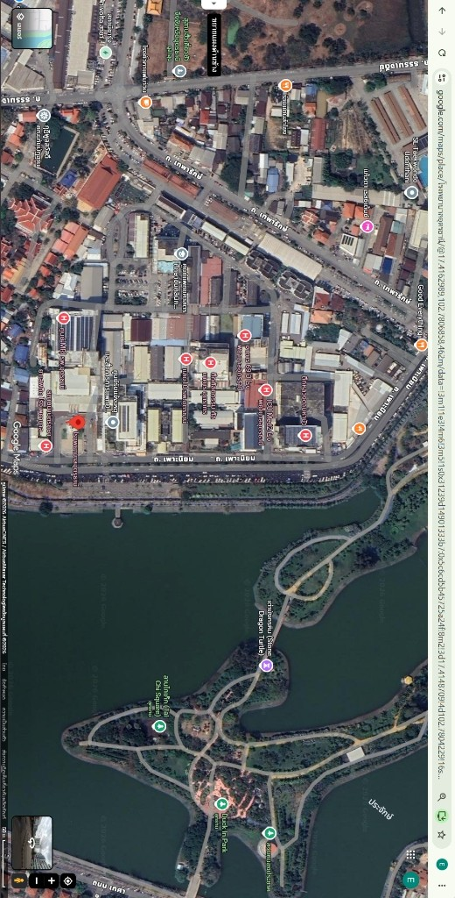
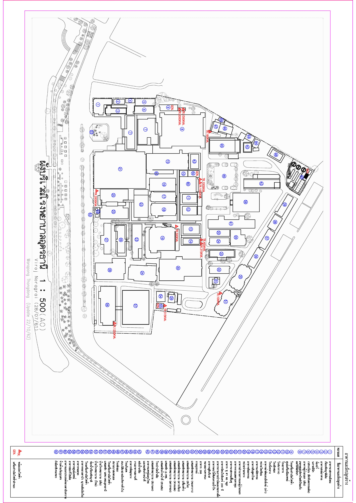

UDH Navigator
ผังบริเวณและเลือกอาคาร
✎ Studio
ผังบริเวณโรงพยาบาลอุดรธานี (แผนผังแม่บท 1:500 & Google Satellite)
เลือกอาคารที่ต้องการนำทาง
เลือกซ้อนภาพ Layer แผนผัง CAD (`Map.jpg`) ทับภาพถ่ายดาวเทียม Google Maps (หมุน 90° ขนานแนวผัง) ได้ทันที

🔍
รายการอาคารในระบบ
20 อาคารหมายเหตุ: หมายเลขและชื่ออาคารอ้างอิงตรงตามตารางดรรชนีบนแผนผัง `Map.jpg` โรงพยาบาลอุดรธานี